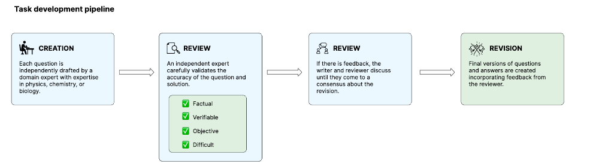
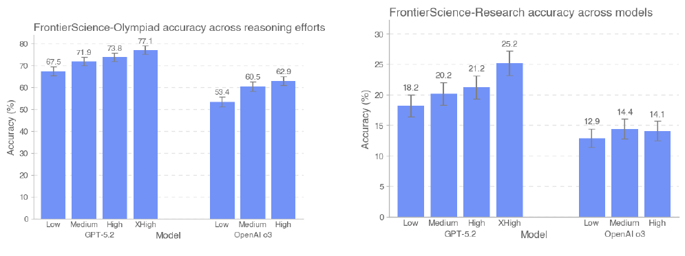

AI 能解答越来越难的科学题，但这能说明它适合承担哪些研究工作？FrontierScience 将竞赛式解题与开放的研究子问题放在两条轨道上评价。沿着专家出题、复审、评分和模型比较，我们可以看清这套评测提供了什么证据，以及它尚未覆盖什么。
本文依据 2026 年 1 月 29 日的 arXiv v1。下文模型名称和成绩均指论文当时的实验设置。
一、课题解读：科学能力应该怎样评价
假设我们想研究一种材料，可能需要完成不同层次的工作：根据条件计算物理量，解释实验现象，提出值得研究的问题，再设计实验并根据反馈调整方向。
这些工作需要分别评价。回答知识题可以提供局部证据；判断 AI 能否支持研究，还要检查它能否组织多步推理、满足约束，并给出充分论证。
这个领域的核心问题是：一个评测分数，究竟对应科研过程中的哪一种能力？ 题目是否足够难是一方面，成绩能否帮助我们判断实际研究表现，是另一项需要验证的关系。
二、相关文献解读：此前在测量什么
| 工作 | 主要评价对象 | 留下的问题 |
|---|---|---|
| GPQA | 专家编写的高难度科学选择题 | 选对答案能在多大程度上反映独立推导能力？ |
| OlympiadBench | 数学、物理等竞赛级问题，包含开放答案 | 已公开题目可能带来污染；竞赛题也未覆盖研究中的开放判断 |
| PaperBench | 理解论文、实现代码并执行复现实验 | 完整复现同时涉及推理、工程与执行，需要进一步定位各部分能力 |
FrontierScience 选择了一个中间层次：保留答案较明确的科学题，同时加入需要多步解释、论证与判断的研究子问题。它希望让科学推理评测更难、更原创，并提供更细的诊断信息。
三、研究问题解读：论文希望回答什么
我们将论文目标归纳为三个阅读问题，后面的方法和实验围绕它们展开。这是本文的整理，并非作者逐字列出的研究问题。
- 怎样构造足够难、原创且可核验的科学题？ 需要同时检查难度、条件完整性与答案正确性。
- 开放式研究回答怎样评分？ 需要识别推理和解释中的具体缺失，而不只判断最终答案。
- 当前模型的能力差异在哪里？ 需要比较两类任务的整体表现，再检查增加推理投入能改善多少。
四、方法解读：从专家出题到自动评分
第一步：把能力拆成两条评测轨道
公开的 gold 集共有 160 题，分为 Olympiad 和 Research。更大的原始题池并未全部公开，作者保留部分题目以追踪公开集的潜在污染。
| 轨道 | 公开题数 | 任务形式 | 评分依据 |
|---|---|---|---|
| Olympiad | 100 | 竞赛式科学推理，通常有明确短答案 | 数值、表达式或名称是否等价 |
| Research | 60 | 博士研究过程中可能遇到的开放子问题 | 每题专门设计的 10 分制评分细则 |
Research 的公开题集覆盖物理、化学和生物，各 20 题。出题者包括博士生、博士后和教授，题目要求提供完成推理所需的背景、变量与假设。这里已经划定了评价范围：。
第二步：用独立复审检查题目质量

审核不仅要看题目难不难，还要检查条件是否充分、答案是否正确、问题是否原创。Research 至少经过两次独立审核，之后还有整体复审。无法解决的分歧可以导致题目被丢弃。
这里值得学习的是：难题也需要质量控制。 缺少条件或存在歧义，同样可能让模型失败，却不能据此判断其推理能力不足。
第三步：把开放回答拆成可检查的评分项
Research 每题配有总分 10 分的 rubric。它把回答拆成若干具体要求，并可设置部分分。例如，原文的化学样例分别检查合成方法的限制、电子结构、谱学表现及反应性解释，使“提到了概念”与“建立了正确联系”获得不同评价。
两条轨道都使用 GPT-5 high 作为模型评分器：Olympiad 比较回答与参考答案是否等价；Research 则按 rubric 累加分数，达到 7/10 分记为通过。评分器能扩大评测规模，但评分规则和评分器自身的可靠性也需要检查。评分方法与提示词见原文第 2.3 节及附录 B。
五、实验设计与结果：先看整体表现，再看推理投入
主实验：模型在两条轨道上的整体表现
作者比较多种前沿模型。Olympiad 成绩平均自 20 次独立试验，Research 平均自 30 次；Research 的指标是回答获得至少 7 分的比例，而不是平均 rubric 分数。这些成绩也不是多次作答后挑选最好答案的结果。
评测不使用浏览。GPT-5.2 使用 xhigh 推理投入，其他推理模型使用 high，因此跨模型比较并没有完全统一计算条件。
下表摘录 Figure 6 中的四组结果，保留一位小数。
| 模型 | Olympiad 准确率 | Research 通过率 |
|---|---|---|
| GPT-5.2 | 77.1% | 25.2% |
| Gemini 3 Pro | 76.1% | 12.4% |
| Claude Opus 4.5 | 71.4% | 17.5% |
| GPT-5 | 69.7% | 25.2% |
最有信息量的是排名变化：Gemini 3 Pro 的竞赛成绩接近 GPT-5.2，但研究题表现并不接近；GPT-5 则在 Research 上与 GPT-5.2 并列。这支持我们分别检查两类能力，而不只用一项科学题总分判断模型是否适合研究工作。
同时，两条轨道使用不同任务和判分方式，分数差不能直接解释为某种能力损失。这组实验展示了模型差异和评测尚未饱和，但还没有证明这些分数能够准确预测真实科研产出。
补充分析：增加推理投入能改善多少

原图中，GPT-5.2 从 low 增加到 xhigh 后的变化如下：
| 轨道 | Low | Xhigh | 变化（百分点） |
|---|---|---|---|
| Olympiad | 67.5% | 77.1% | +9.6 |
| Research | 18.2% | 25.2% | +7.0 |
更多推理在这些设置下有帮助，但 Research 仍留下较大空间。o3 的结果也提醒我们，收益需要逐模型、逐任务检查；图中小幅回落本身不足以证明更高投入必然有害。
论文主要提供模型比较与推理投入比较，没有通过组件消融单独量化专家复审或某种 rubric 设计对评测质量的贡献。对于这套评测本身的有效性，还需要额外验证。
六、我们自己的思考
课题思考：这个领域在研究什么
我们认为，这个领域在建立两种联系：一是把抽象的科学能力拆成可观察的任务；二是确认这些任务成绩是否对应真实研究表现。FrontierScience 对第一种联系给出了有用设计，第二种联系仍需要与项目和实验结果对照。
局限问题思考：目前还存在哪些问题
- 评价范围仍有限。 给定问题的求解，与发现有价值的问题之间仍有距离；文本回答也未覆盖实验操作、多模态观察与持续研究决策。
- 评分标准仍需独立验证。 附录要求评分器严格服从 rubric；规则若遗漏合理路径，回答可能被不恰当地扣分。论文也没有建立这套题集的人类表现基线。
- 分数受到构建与资源设置影响。 出题过程中会修改或丢弃内部模型容易解决的题目。加上推理投入差异，成绩不能直接当作日常科研成功概率，排名也需要保留这些条件。
解决方案思考：这些问题有哪些解决方向
以下是我们认为值得尝试的方向，分别对应上述局限。
- 把题目成绩连接到完整项目。 检查高分模型是否也更能完成实验、复现结果，或提高候选方案质量，验证分数对实际工作是否有预测作用。
- 独立评价 rubric。 让专家盲评回答，加入不同但正确的解法以及看似合理的错误解法，测量误判与漏判，并建立专业匹配的人类基线。
- 控制筛题和推理预算。 在相近成本下比较模型，使用独立于被测模型的出题流程，并报告不同学科、评分阈值和重复运行下的变化。
这些是后续研究设想。我们最想继续追问的是：一套评测除了制造难题，能否帮助判断模型适合承担科研中的哪一步。
本文基于 FrontierScience arXiv v1。插图归 Miles Wang 等原作者所有，按 CC BY 4.0 引用；图表仅裁去页面外围内容，未改绘或更改数据。表格按原文图示摘录；解释与后续研究方向为本文分析。